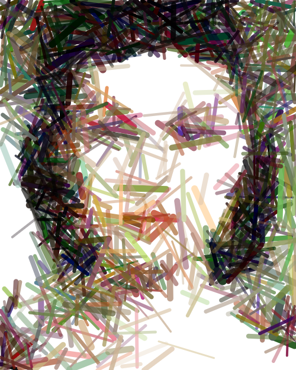
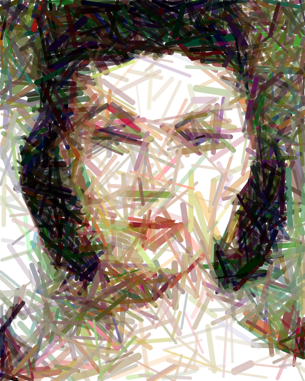

MCMC-Based Artistic Line and Dot Painting Generation
Transform any image into beautiful line-based or pointillism-style artwork using Reversible Jump MCMC algorithms. This R package combines statistical optimization with digital art generation to create stunning artistic interpretations of photographs.
Overview
mcmcPainter uses advanced Markov Chain Monte Carlo (MCMC) techniques to iteratively build artwork by adding, removing, and modifying artistic elements (lines or dots) until the result closely matches a target image. The algorithm intelligently explores the space of possible artworks, gradually improving the match through statistical optimization.
Key Features
- 🨠Dual Art Styles: Generate both line-based and dot-based (pointillism) artwork
- ⚡ High Performance: C++ optimized core functions for fast MCMC sampling
- 🖼️ Flexible Input: Supports various image formats (PNG, JPEG, etc.)
- 📠Smart Scaling: Automatic image analysis and parameter optimization
- 📊 Progress Tracking: Saves intermediate results every N iterations
- 🯠Quality Control: PNG verification and intelligent parameter tuning
- 📦 Professional Package: Full R package structure with comprehensive documentation
Installation
# Install dependencies
install.packages(c("Rcpp", "magick", "png", "knitr", "rmarkdown"))
# Clone the repository
# git clone https://github.com/davidhodgson/mcmcPainter.git
# Load the package
source("R/mcmcPainter.R")
source("R/mcmc_core.R")
source("R/utilities.R")
# Compile C++ code
Rcpp::sourceCpp("src/mcmc_painter_cpp.cpp")Quick Start
Line Painting
# Generate line painting
res <- run_line_painter(
image_path = "inst/extdata/leaf_converted.png",
iters = 10000,
out_dir = "inst/results/my_artwork"
)
# Create visualization
create_triptych(
default_canvas = array(1, dim = c(800, 1422, 3)),
best_canvas = res$best$canvas,
target_img = load_image_rgb("inst/extdata/leaf_converted.png", 800, 1422)
)Dot Painting (Pointillism)
# Generate dot painting
res <- run_dot_painter(
image_path = "inst/extdata/leaf_converted.png",
iters = 10000,
out_dir = "inst/results/my_dot_artwork"
)
# Create dot triptych
create_dot_triptych(
default_canvas = array(1, dim = c(800, 1422, 3)),
best_canvas = res$best$canvas,
target_img = load_image_rgb("inst/extdata/leaf_converted.png", 800, 1422)
)How It Works
The MCMC Algorithm
The package implements a Reversible Jump MCMC algorithm with four types of moves:
- Birth: Add new artistic elements (lines or dots) based on image residuals
- Death: Remove existing elements
- Jitter: Perturb element parameters (position, color, opacity, size)
- Swap: Reorder element rendering for better composition
Line Painting Algorithm
For line-based artwork, each line is defined by: - Position: Start and end coordinates (x1, y1, x2, y2) - Color: RGB values (r, g, b) - Opacity: Alpha transparency (0-1) - Thickness: Line width in pixels
The algorithm uses data-driven birth proposals, sampling new lines from areas with high image residuals to focus on important features.
Dot Painting Algorithm
For pointillism-style artwork, each dot is defined by: - Position: Center coordinates (x, y) - Color: RGB values (r, g, b) - Opacity: Alpha transparency (0-1) - Radius: Dot size in pixels
The algorithm creates pointillism effects by strategically placing dots of varying sizes and opacities.
Performance Optimization
- C++ Implementation: Core rendering functions written in C++ for 3-20x speedup
- Bounding Box Optimization: Only re-renders affected regions for efficiency
- Adaptive Temperature: Gradually increases exploration to balance quality and speed
- Memory Management: Efficient array operations and memory usage
Package Structure
mcmcPainter/
├── R/ # R source code
│ ├── mcmcPainter.R # Main package functions
│ ├── mcmc_core.R # Core MCMC algorithm
│ ├── utilities.R # Utility functions
│ └── dot_mcmc_core.R # Dot painting algorithm
├── src/ # C++ optimization code
│ ├── mcmc_painter_cpp.cpp
│ └── dot_painter_cpp.cpp
├── vignettes/ # Documentation and examples
│ ├── mcmcPainter_demo.Rmd
│ ├── leaf_mcmc_demo.Rmd
│ ├── iamami_mcmc_demo.Rmd
│ ├── butterfly_mcmc_demo.Rmd
│ ├── octopus_mcmc_demo.Rmd
│ └── me_mcmc_demo.Rmd
├── inst/extdata/ # Sample images
├── inst/results/ # Generated artwork examples
└── create/ # Standalone execution scriptsMain Functions
Line Painting
-
run_line_painter(): Main function to generate line paintings -
create_triptych(): Create before/after visualizations -
save_triptych(): Save triptychs to PDF/PNG
Examples
High-Quality Line Painting: Portrait Progression
Here’s a stunning example of the MCMC line painting algorithm in action, showing the progression from a white canvas to a detailed portrait over 100,000 iterations:
| Initial Canvas | 25,000 Iterations | 50,000 Iterations | 75,000 Iterations | Final Result (100K) |
|---|---|---|---|---|
 |
 |
 |  |  |
Triptych View: Complete progression from white canvas to final artwork 
This example demonstrates the algorithm’s ability to capture fine facial details, hair texture, and subtle shading through strategic line placement and optimization.
Additional Examples
The package includes several other example images and pre-generated results:
- Leaf: Botanical line artwork (132KB image)
- Iamami: Portrait with auto-configuration (336KB image)
- Butterfly: High-detail 100K iteration run (4.2MB image)
- Octopus: Marine life pointillism (380KB image)
- Portrait: Personal photo artwork (3.2MB image)
Vignettes
Comprehensive tutorials are available:
- Complete Demo: Full package functionality walkthrough
- Leaf Tutorial: Step-by-step line painting example
- Iamami Tutorial: Auto-configuration and optimization
- High-Quality Examples: 100K iteration demonstrations
Performance
- Speed: 3-20x faster than pure R implementation
- Scalability: Handles images up to 2000x2000 pixels
- Memory: Efficient memory usage for large images
- Quality: Adaptive algorithms ensure optimal results
Output Structure
Each MCMC run creates: - iter_000000.png: Initial white canvas - iter_001000.png: After 1,000 iterations - iter_002000.png: After 2,000 iterations - ... - final.png: Final result - best_iter_XXXXXX.png: Best iteration found
Applications
- Digital Art: Create unique artistic interpretations of photos
- Educational: Demonstrate MCMC algorithms and optimization
- Research: Explore algorithmic art and computational creativity
- Entertainment: Generate personalized artwork from family photos
Technical Details
The package uses advanced statistical techniques:
- Reversible Jump MCMC: For variable-dimension parameter spaces
- Data-Driven Proposals: Intelligent birth moves based on image residuals
- Adaptive Temperature: Dynamic exploration-exploitation balance
- Alpha Compositing: Proper color blending for realistic effects
- Bounding Box Optimization: Efficient rendering updates
Contributing
Contributions are welcome! Please feel free to submit issues, feature requests, or pull requests.
Citation
If you use this package in your research, please cite:
@software{mcmcPainter,
title = {mcmcPainter: MCMC-Based Artistic Line and Dot Painting Generation},
author = {David Hodgson},
year = {2024},
url = {https://github.com/davidhodgson/mcmcPainter}
}Transform your images into algorithmic art with the power of MCMC optimization! 🎨⚡